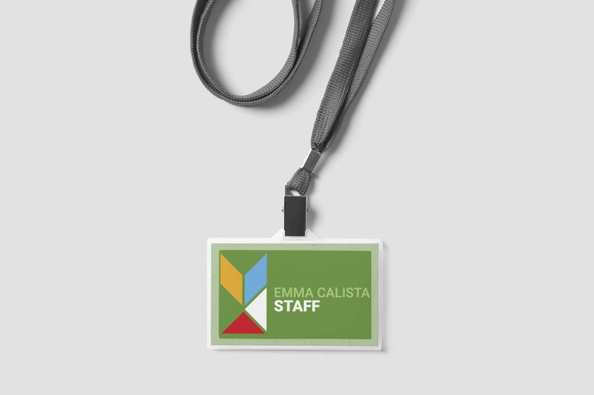
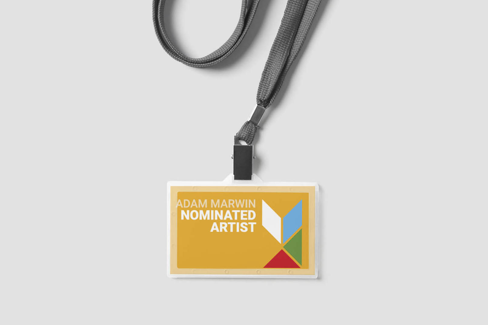
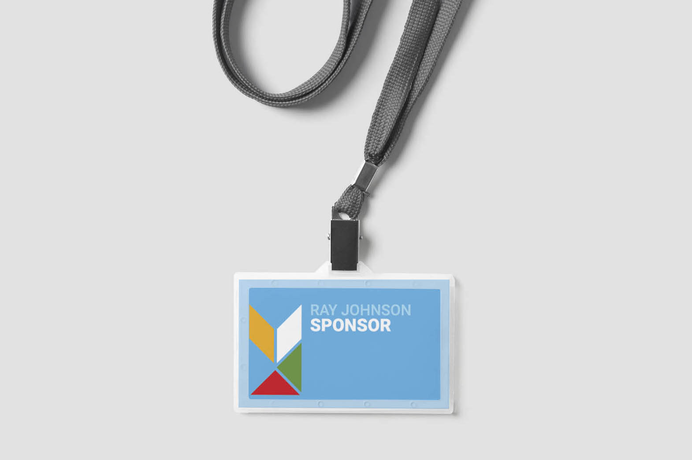
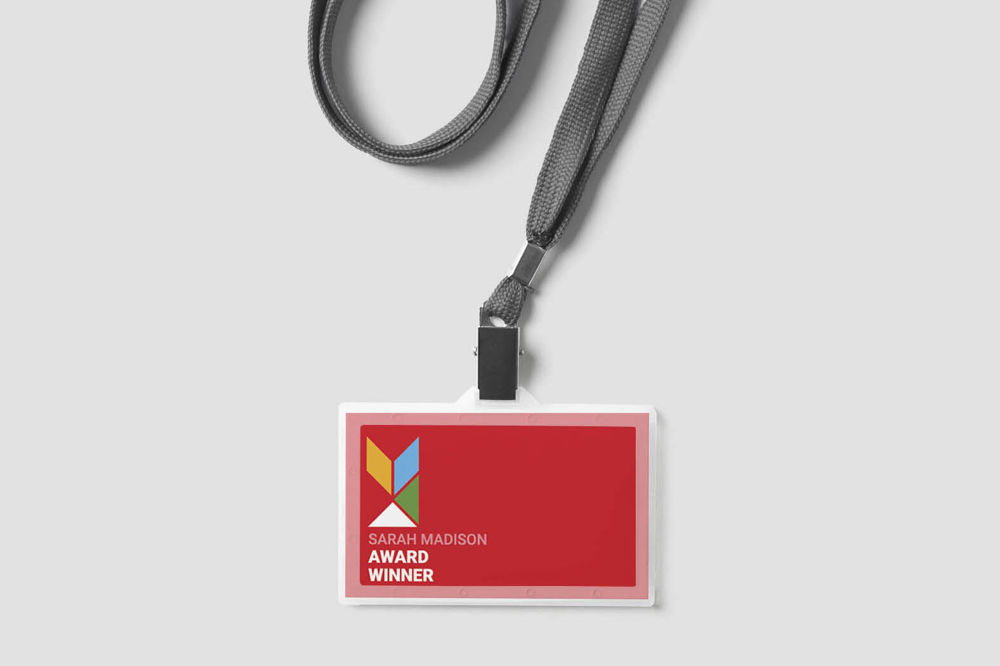
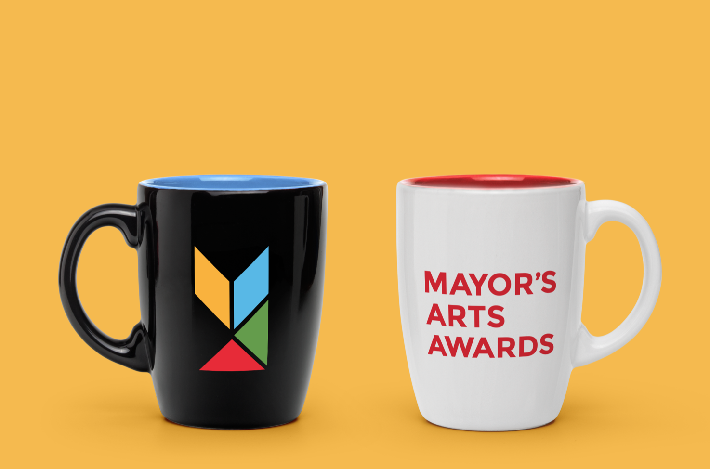
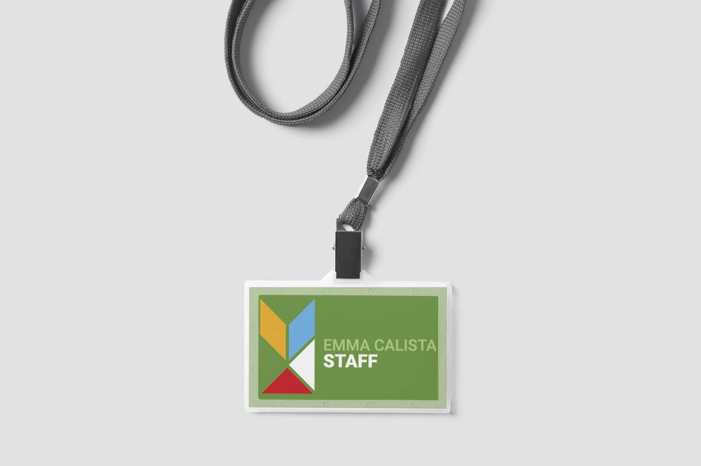
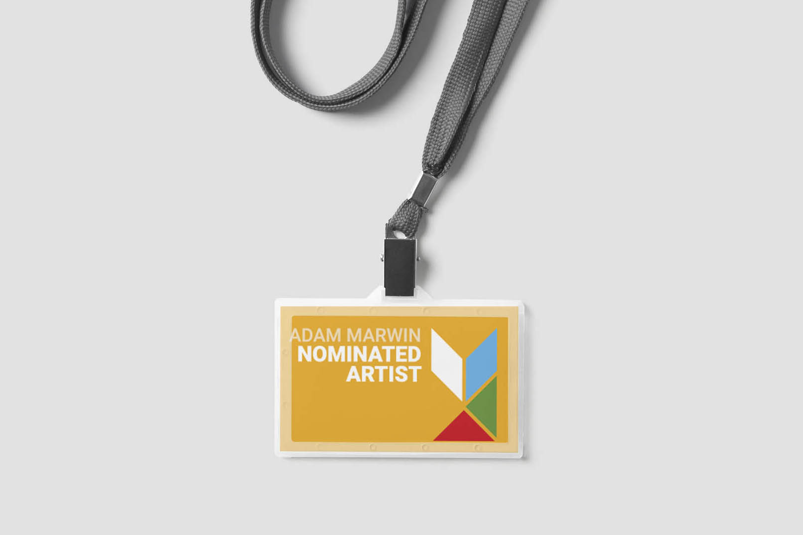
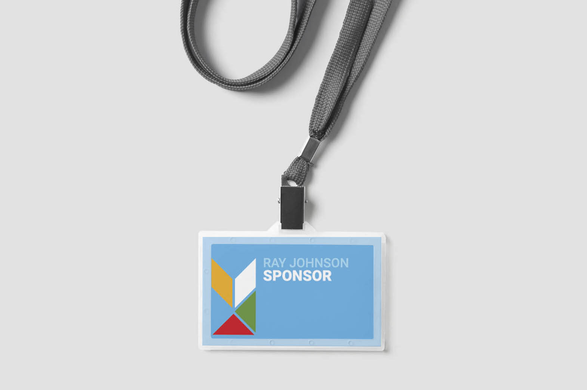
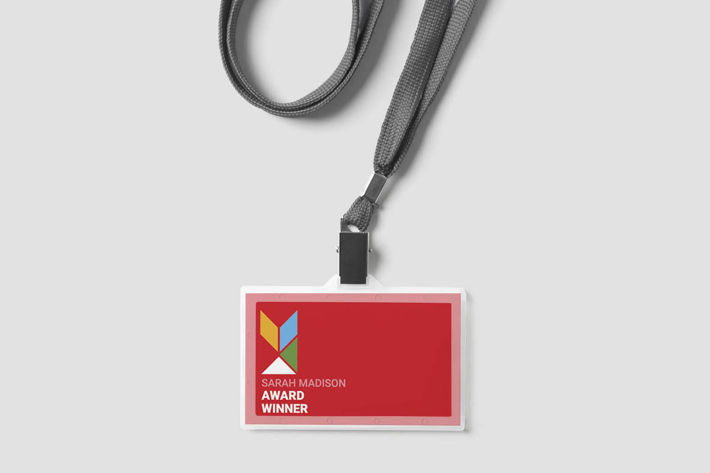
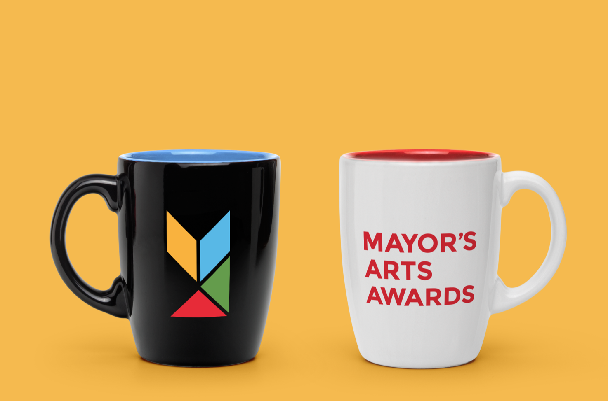

Mayors Arts Awards
Role: Branding
I rebranded the Muncie Mayor's Arts Awards as part of my Design Seminar class in 2017. This was my solution. I decided to represent the different cultural districts of Muncie using four different colors coming together to form a design. The mark is meant to recall stained glass, symbolic of the gas boom in Indiana, which allowed for art glass and the glass industry to help develop Muncie, Indiana.
 








